Prometheus（普罗米修斯）是一套开源的监控&报警&时间序列数据库的组合，起始是由SoundCloud公司开发的。随着发展，越来越多公司和组织接受采用Prometheus，社会也十分活跃，他们便将它独立成开源项目，并且有公司来运作。Google SRE的书内也曾提到跟他们BorgMon监控系统相似的实现是Prometheus。现在最常见的Kubernetes容器管理系统中，通常会搭配Prometheus进行监控。
介绍Prometheus
Prometheus（普罗米修斯）是一套开源的监控&报警&时间序列数据库的组合，起始是由SoundCloud公司开发的。随着发展，越来越多公司和组织接受采用Prometheus，社会也十分活跃，他们便将它独立成开源项目，并且有公司来运作。Google SRE的书内也曾提到跟他们BorgMon监控系统相似的实现是Prometheus。现在最常见的Kubernetes容器管理系统中，通常会搭配Prometheus进行监控。
Prometheus基本原理是通过HTTP协议周期性抓取被监控组件的状态，这样做的好处是任意组件只要提供HTTP接口就可以接入监控系统，不需要任何SDK或者其他的集成过程。这样做非常适合虚拟化环境比如VM或者Docker 。
Prometheus应该是为数不多的适合Docker、Mesos、Kubernetes环境的监控系统之一。
输出被监控组件信息的HTTP接口被叫做exporter 。目前互联网公司常用的组件大部分都有exporter可以直接使用，比如Varnish、Haproxy、Nginx、MySQL、Linux 系统信息 (包括磁盘、内存、CPU、网络等等)，具体支持的源看：https://github.com/prometheus。
与其他监控系统相比，Prometheus的主要特点是：
- 一个多维数据模型（时间序列由指标名称定义和设置键/值尺寸）。
- 非常高效的存储，平均一个采样数据占~3.5bytes左右，320万的时间序列，每30秒采样，保持60天，消耗磁盘大概228G。
- 一种灵活的查询语言。
- 不依赖分布式存储，单个服务器节点。
- 时间集合通过HTTP上的PULL模型进行。
- 通过中间网关支持推送时间。
- 通过服务发现或静态配置发现目标。
- 多种模式的图形和仪表板支持。
Prometheus架构概览
该图说明了普罗米修斯（Prometheus）及其一些生态系统组件的整体架构：
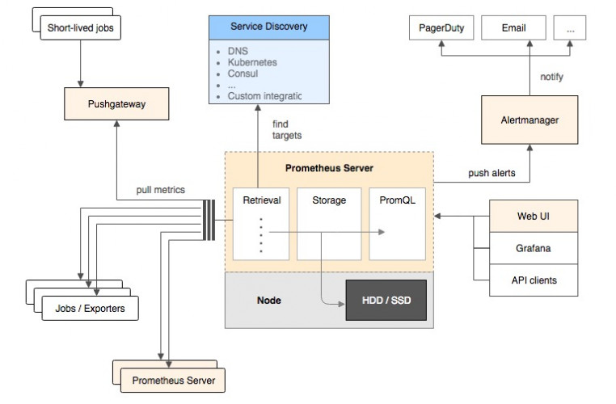
它的服务过程是这样的Prometheus daemon负责定时去目标上抓取metrics(指标) 数据，每个抓取目标需要暴露一个http服务的接口给它定时抓取。
Prometheus：支持通过配置文件、文本文件、zookeeper、Consul、DNS SRV lookup等方式指定抓取目标。支持很多方式的图表可视化，例如十分精美的Grafana，自带的Promdash，以及自身提供的模版引擎等等，还提供HTTP API的查询方式，自定义所需要的输出。
Alertmanager：是独立于Prometheus的一个组件，可以支持Prometheus的查询语句，提供十分灵活的报警方式。
PushGateway：这个组件是支img持Client主动推送metrics到PushGateway，而Prometheus只是定时去Gateway上抓取数据。
如果有使用过statsd的用户，则会觉得这十分相似，只是statsd是直接发送给服务器端，而Prometheus主要还是靠进程主动去抓取。
大多数Prometheus组件都是用Go编写的，它们可以轻松地构建和部署为静态二进制文件。访问prometheus.io以获取完整的文档，示例和指南。
Prometheus的数据模型
Prometheus从根本上所有的存储都是按时间序列去实现的，相同的metrics(指标名称) 和label(一个或多个标签) 组成一条时间序列，不同的label表示不同的时间序列。为了支持一些查询，有时还会临时产生一些时间序列存储。
metrics name&label指标名称和标签
每条时间序列是由唯一的”指标名称”和一组”标签（key=value）”的形式组成。
指标名称：一般是给监测对像起一名字，例如httprequests_total这样，它有一些命名规则，可以包字母数字之类的的。通常是以应用名称开头监测对像数值类型_单位这样。例如：push_total、userlogin_mysql_duration_seconds、app_memory_usage_bytes。
标签：就是对一条时间序列不同维度的识别了，例如一个http请求用的是POST还是GET，它的endpoint是什么，这时候就要用标签去标记了。最终形成的标识便是这样了：http_requests_total{method=”POST”,endpoint=”/api/tracks”}。
记住，针对http_requests_total这个metrics name无论是增加标签还是删除标签都会形成一条新的时间序列。
查询语句就可以跟据上面标签的组合来查询聚合结果了。
如果以传统数据库的理解来看这条语句，则可以考虑http_requests_total是表名，标签是字段，而timestamp是主键，还有一个float64字段是值了。（Prometheus里面所有值都是按float64存储）。
Prometheus四种数据类型
Counter
Counter用于累计值，例如记录请求次数、任务完成数、错误发生次数。一直增加，不会减少。重启进程后，会被重置。
例如：http_response_total{method=”GET”,endpoint=”/api/tracks”} 100，10秒后抓取http_response_total{method=”GET”,endpoint=”/api/tracks”} 100。
Gauge
Gauge常规数值，例如 温度变化、内存使用变化。可变大，可变小。重启进程后，会被重置。
例如： memory_usage_bytes{host=”master-01″} 100 < 抓取值、memory_usage_bytes{host=”master-01″} 30、memory_usage_bytes{host=”master-01″} 50、memory_usage_bytes{host=”master-01″} 80 < 抓取值。
Histogram
Histogram（直方图）可以理解为柱状图的意思，常用于跟踪事件发生的规模，例如：请求耗时、响应大小。它特别之处是可以对记录的内容进行分组，提供count和sum全部值的功能。
例如：{小于10=5次，小于20=1次，小于30=2次}，count=7次，sum=7次的求和值。
Summary
Summary和Histogram十分相似，常用于跟踪事件发生的规模，例如：请求耗时、响应大小。同样提供 count 和 sum 全部值的功能。
例如：count=7次，sum=7次的值求值。
它提供一个quantiles的功能，可以按%比划分跟踪的结果。例如：quantile取值0.95，表示取采样值里面的95%数据。
安装运行Prometheus(docker版)
下面介绍如何使用Prometheus和Grafana对本机服务器性能进行监控。
监控本机，只需要一个exporter
node_exporter – 用于机器系统数据收集
Grafana是一个开源的功能丰富的数据可视化平台，通常用于时序数据的可视化。它内置了以下数据源的支持：
下面是我们安装时用到的架构图：

注意：本文使用的是ubuntu-16.04.5-server-amd64，只需要一台服务器即可！
安装docker
1 | apt-get install -y docker.io |
注意：网上的文章说要安装docker-engine和docker-ce，那都是扯淡的。包压根都找不到！
只需要安装docker.io就可以了！
如果是Centos系统，使用 yum install -y docker-io 安装
下载镜像包
1 | docker pull prom/node-exporter |
启动node-exporter
1 | docker run -d -p 9100:9100 \ |
等待几秒钟，查看端口是否起来了
1 | root@ubuntu:~# netstat -anpt |
访问url：
1 | http://192.168.91.132:9100/metrics |
效果如下：
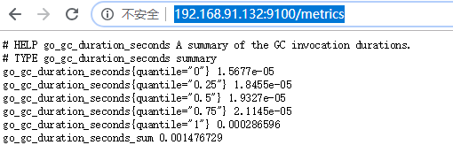
这些都是收集到数据，有了它就可以做数据展示了
启动prometheus
新建目录prometheus，编辑配置文件prometheus.yml
1 | mkdir /opt/prometheus |
内容如下：
1 | global: |
注意：修改IP地址，这里的192.168.91.132就是本机地址
启动prometheus
1 | docker run -d \ |
等待几秒钟，查看端口状态
1 | root@ubuntu:/opt/prometheus# netstat -anpt |
访问url：
1 | http://192.168.91.132:9090/graph |
效果如下：
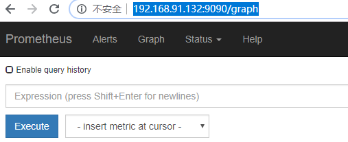
访问targets，url如下：
1 | http://192.168.91.132:9090/targets |
效果如下：
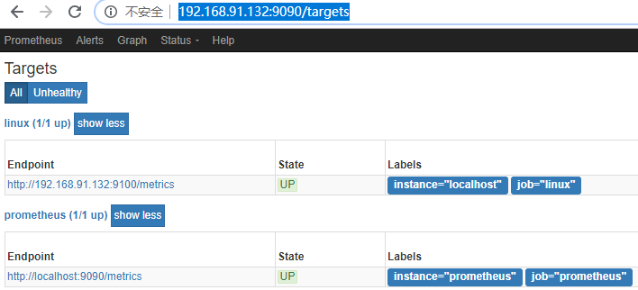
如果状态没有UP起来，等待一会，就会UP了
启动grafana
新建空文件夹grafana-storage，用来存储数据
1 | mkdir /opt/grafana-storage |
设置权限
1 | chmod 777 -R /opt/grafana-storage |
因为grafana用户会在这个目录写入文件，直接设置777，比较简单粗暴！
启动grafana
1 | docker run -d \ |
等待几秒钟，查看端口状态
1 | root@ubuntu:/opt/prometheus# netstat -anpt |
访问url：
1 | http://192.168.91.132:3000/ |
默认会先跳转到登录页面，默认的用户名和密码都是admin
登录之后，它会要求你重置密码。你还可以再输次admin密码！
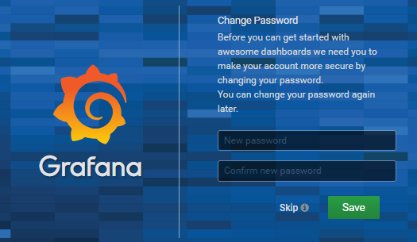
密码设置完成之后，就会跳转到首页
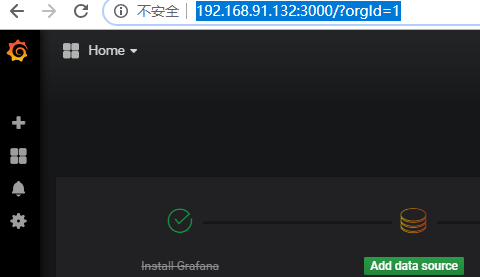
点击Add data source，由于使用的是镜像方式，所以版本比较新。和网络上的文章展示的图片不一样！
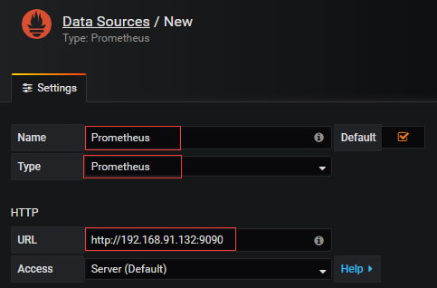
name名字写Prometheus
type 选择Prometheus，因为数据都从它那里获取
url 输入Prometheus的ip+端口
点击下面的Save & Test，如果出现绿色的，说明ok了
回到首页，点击New dashboard
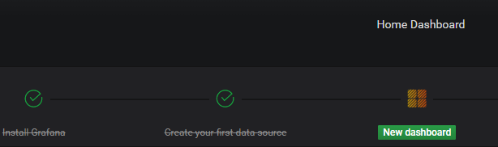
点击 Graph
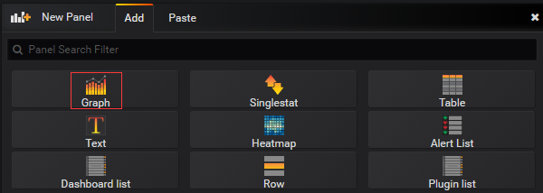
效果如下：
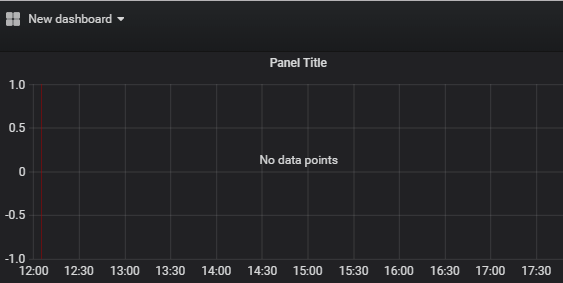
点击标题下方的编辑
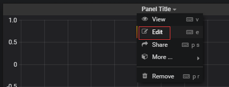
效果如下：
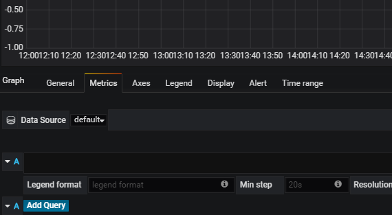
输入cpu，底部会有提示
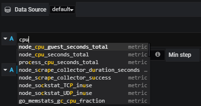
这里监控 node_load15，表示系统15分钟的负载。点击下面的Add Query
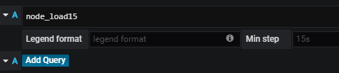
效果如下：
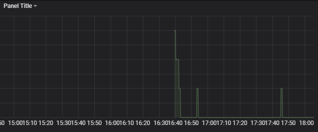
添加总内存
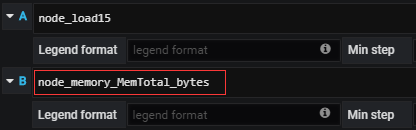
这里会多出一条线
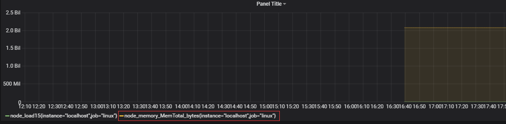
点击右边的，可以删除掉 总内存
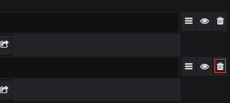
点击General，修改标题为中文
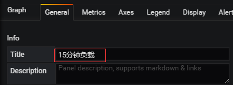
图表效果如下：
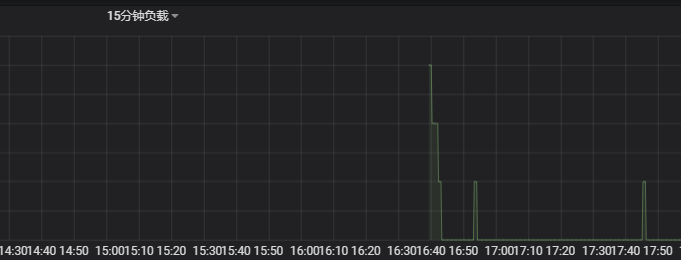
点击上面的保存按钮
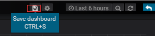
输入名字
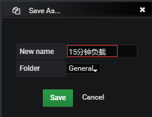
效果如下：
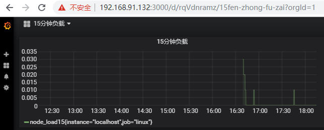
点击首页，就会有展示
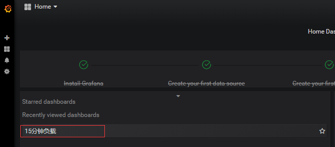

...
...
Copyright 2021 sunfy.top ALL Rights Reserved